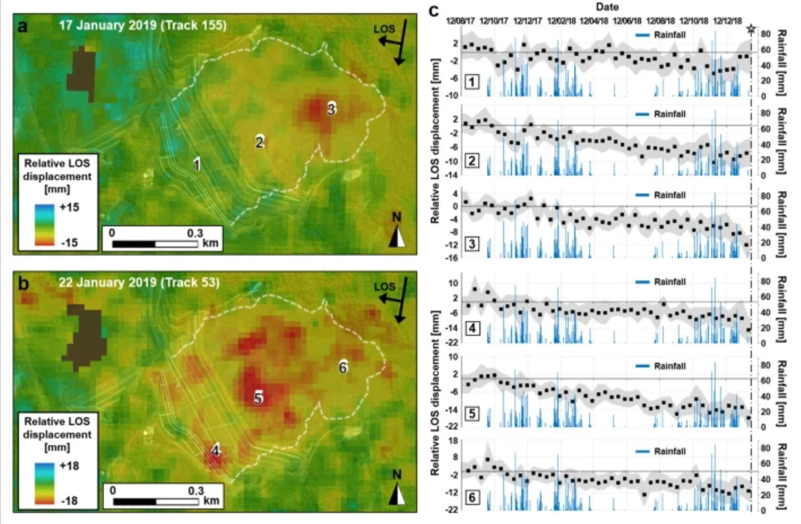
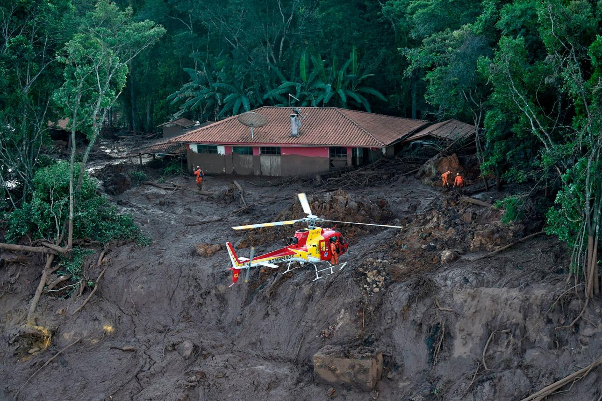
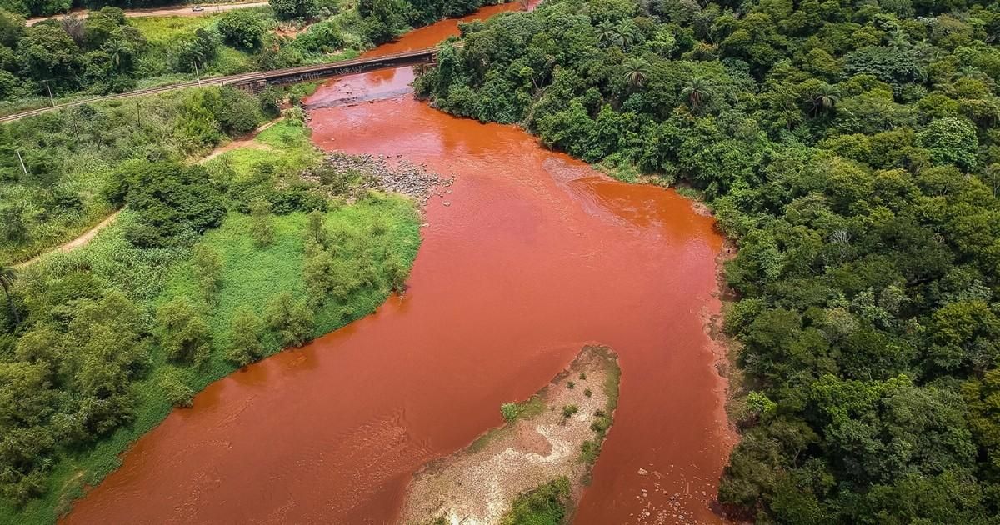
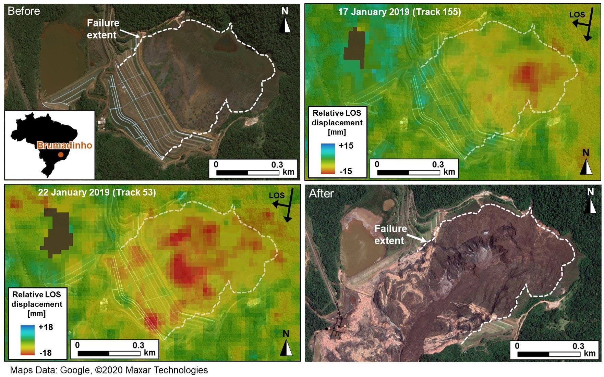

Márcio Pampulini had worked for Vale for eleven years. On the morning of January 25, 2019, he was doing maintenance work on a slope above the Córrego do Feijão mine when his crew fell behind schedule. Lunch would have to wait. It was, without knowing it, the decision that saved his life.
As he finally made his way down toward the cafeteria, he saw it happen.
The ground moved first — a low, structural shudder, the kind that precedes sound. Then Dam I dissolved. Not cracked. Not broke. Dissolved — twelve million cubic meters of iron ore tailings liquefying in seconds into a wave traveling at 120 kilometers per hour, consuming everything between the mountain and the river. The cafeteria where his colleagues were eating lunch disappeared in under ninety seconds.
Márcio stopped walking. Later, he would search for words to describe what he had witnessed. He found only four.
Three kilometers away, Sebastião Gomes was luckier — and he knew it, which made everything harder. A Vale employee since 2000, he had left the cafeteria minutes earlier to climb to a loading platform. When the sound reached him — he described it as a detonation, the kind that precedes silence — he turned and saw the wave. He found a pickup truck. His colleague Elias climbed in beside him.
They began to pray. The wave hit the truck and lifted it, projecting it to the surface of the mud. Beneath them, hundreds of colleagues were being buried alive. Above them, the sky was still blue.
No alarm had sounded. Not before. Not during. Not after.
Sebastião survived. He would later say he now has two birthdays: the day he was born, and the day he almost wasn't.
The siren existed.
It simply was never activated.
That detail — small, administrative, almost bureaucratic in its quietness — is the entry point into everything that followed. Because the silence of that siren was not a malfunction. It was not negligence in any simple sense. It was the logical output of something larger and more durable than any single decision made that day: a system designed to receive signals of imminent collapse and then wait for a human being, somewhere in an organizational hierarchy, to decide what to do about them.
The failure was not geological.
The failure was institutional.
The data had been screaming for 47 days.
No one with the authority to act was required to listen.
Forty-seven days before the dam collapsed, another witness had already seen the failure begin.
It was not an engineer. It was not a regulator. It was not anyone at Vale.
It was a satellite.

The satellite didn't care about quarterly earnings. It didn't have a contract up for renewal. It didn't report to anyone with the word "Chief" in their title. It orbited the Earth at 700 kilometers, aimed its radar at the surface of Dam I, and measured, with millimeter precision, how much the dam was moving.
And the dam was moving.
Slowly at first. Then faster. Then faster still — the kind of acceleration that dam engineers have a name for, because they have seen it before, because it has always ended the same way. By early December 2018, the surface of Dam I was deforming at 3.4 millimeters per day. In the literature of dam safety, this is not an ambiguous data point. It is not a "signal requiring further study" or an "anomaly warranting observation." It is a precursor to collapse. It has been a precursor to collapse, in dam after dam, for as long as humans have been building dams and watching them fail.
The satellite reported this faithfully, as satellites do, to the humans paid to receive the report.
Those humans worked for TÜV SÜD.
TÜV SÜD is a German company, founded in 1866, headquartered in Munich, whose entire business is the independent certification of things as safe. Independence is, one might say, the product. Vale had hired TÜV SÜD to look at Dam I and tell them, officially, whether it was stable.
There was a small complication.
Vale had already asked two other firms to do the same thing. Both had looked at Dam I and concluded, with professional regret, that they could not certify it. Vale had fired both of them. TÜV SÜD was the third firm hired. When TÜV SÜD's own Brazilian engineers ran their calculations, they found what the previous two firms had found: the dam did not meet the minimum required stability factor. It should not, under any reasonable interpretation of their own professional standards, have been certifiable.
This presented a problem. Specifically, it presented a billing problem.
What followed, according to investigators, was a search — diligent, methodical, very well documented in internal emails — for a different set of calculations. New methods. Adjusted parameters. Modified conditions. The kind of search you conduct not when you are trying to find the truth but when you already know the answer you need and are working backwards from it.
They found what they were looking for. They attached conditions to the certification — no explosives nearby, enhanced monitoring, some operational restrictions — the kind of conditions that allow a signature to appear on a document without technically constituting a lie. In November 2018, an internal email noted, with the tone of someone mentioning the weather:
On January 14, 2019, TÜV SÜD certified Dam I as stable.
Eleven days later, it was not.
Here is the thing about the satellite data. It was not lost. It was not corrupted. It was not sitting in an inbox somewhere, unread, beneath a backlog of less urgent messages. It was being received, processed, and reviewed by people whose job was to receive, process, and review it.
The signal existed. The signal was clear. The signal had been clear for 47 days.
What did not exist was any legal mechanism on earth that required anyone to do anything about it.
The certification said stable. The law believed the certification. The cafeteria filled up for lunch.
At this point, you might be wondering who was supposed to stop this.
It's a reasonable question. There was a monitoring system. There was a certification firm. There was a regulatory agency — the Brazilian National Mining Agency, the ANM — whose specific, stated, legally mandated purpose was to make sure that dams like Dam I did not kill people. There were engineers inside Vale who had access to the same InSAR data the satellite was producing. There were laws. There were inspections. There were forms, and filings, and reviews, and audits, and a bureaucratic apparatus of such apparent thoroughness that one could be forgiven for assuming that somewhere inside it, someone had the authority — and the obligation — to say: stop.
Nobody did.
This is the part where it becomes tempting to look for a villain. A specific person who saw the data and chose, consciously, to let 270 people die. Someone to charge, to sentence, to point at. And there are, in fact, people being charged — sixteen of them, including Vale's former CEO and four TÜV SÜD engineers, all facing homicide counts in a Brazilian court. So perhaps the villain story is available, if you need it.
But it misses the point.
Because the genuinely disturbing thing about Brumadinho is not that bad people did bad things inside a system designed to stop them. The genuinely disturbing thing is that the system itself — functioning more or less as designed, populated by people operating more or less within its rules — produced this outcome anyway. You could replace every individual involved with someone more conscientious, more courageous, more immune to institutional pressure, and the architecture would still have permitted it. The gap between the signal and the response was not a flaw in the system's execution.
It was a feature of the system's design.

Brazilian dam safety law at the time operated on what lawyers call a discretionary model. Which sounds technical, so let's say what it actually means.
It means: someone has to decide.
An inspector reviews the data and decides whether it's alarming. A certifier looks at the structure and decides whether it's stable. A regulator receives the report and decides whether to intervene. At every stage, at every gate, in every room where a consequential judgment might be made, a human being sits down, looks at the available information, and makes a call. The system is built on the assumption that the call will be correct.
What the system did not contain — what no version of Brazilian dam safety law at the time contained — was a trigger. A mechanism that said: when the data looks like this, the following things happen automatically, without requiring the approval of any individual, without passing through any discretionary gate, without waiting for a human being to decide that today is the day to act.
The satellite crossed the threshold on December 9th. Under a trigger-based system, that date would have meant something legally binding. Operations suspended. Regulator notified. Emergency assessment initiated. Not because someone decided to do those things. Because the data had crossed a line, and crossing the line was the decision.
Instead, December 9th came and went. Then December 10th. Then Christmas. Then New Year's. Then January 14th, when TÜV SÜD signed the stability certificate, and the law accepted the signature, because that is what the law was designed to do.
Then January 25th.
There is a version of this story in which Brumadinho was a tragedy — a confluence of bad actors and bad luck and a regulatory system that, in a better world, would have worked. That version is comforting. It suggests the problem is solvable with better people, stricter enforcement, stronger political will.
The less comfortable version is this: four years before Brumadinho, the Fundão dam at Samarco — a joint venture between Vale and BHP, 120 kilometers away — collapsed in almost identical circumstances. Nineteen people died. The Rio Doce was contaminated along 600 kilometers. The legal response produced new regulations, new requirements, new emergency planning mandates. None of them contained a non-discretionary trigger. The discretionary model was reformed. It was not replaced.
And then Brumadinho happened.
And then, seven years after Brumadinho, a 2025 government audit found that 23% of Brazil's classified high-risk dams still operate without enforceable emergency plans. The compliance deadline passed in April 2026. Enforcement remains, as it has always been, discretionary.
Someone will decide.
So here is the question that Brumadinho leaves on the table, seven years later, with 270 dead and a river that scientists say may never fully recover.
What would it have taken to stop it?
Not better people. The system had already demonstrated, at Mariana in 2015 and at Brumadinho in 2019, that it could produce catastrophe with the people it had. Replacing the cast doesn't change the play. Not stricter regulations — Brazil passed new dam safety laws after Samarco. They didn't contain a trigger. Not stronger political will — there were investigations, parliamentary commissions, criminal charges against sixteen people including a CEO. None of it changed the underlying architecture.
What was missing was something almost embarrassingly simple.
A line.
Not a guideline. Not a recommended threshold that a qualified professional might consider, in their judgment, when deciding whether to intervene. A line — a specific, pre-agreed, mathematically defined point at which the decision stops being a decision. At which the law stops asking a human being what they think and starts telling them what they must do.
This is not a radical idea. It is how most of the systems we trust with our lives already work. The autopilot on a commercial aircraft doesn't ask the pilot's opinion when airspeed drops below a certain threshold. The circuit breaker in your home doesn't convene a committee when the current exceeds the rated load. They trigger. Automatically. Because someone, at some point, made the engineering decision that certain signals are too important to route through a human judgment that might — for any number of entirely understandable reasons — arrive late.
Or not at all.
Dam safety, as of January 25, 2019, had not made that decision.
The Threshold Function Protocol begins with a simple proposition:
Had that proposition been written into the contracts governing Córrego do Feijão, December 9, 2018 would have been a different kind of day. Not dramatic — that's the point. Bureaucratic, almost. The satellite data crosses the threshold. The Calibration Council certifies the exceedance. Vale's obligations activate. Operations in the downstream zone are suspended. The regulator is notified. Emergency structural assessment begins.
No one heroic is required. No one has to find the courage to override their boss. No one has to decide that today is the day to risk their career on a number their employer would prefer to interpret differently.
The threshold was crossed. The system responds.
TÜV SÜD's stability certificate, signed eleven days before the collapse, would have been legally irrelevant. A piece of paper cannot un-cross a threshold that a satellite crossed on December 9th.
The cafeteria would have been empty.
It is now June 2026. Seven years after Brumadinho. Ten years after Samarco. The 2025 ANM dam safety audit found that 23% of Brazil's classified high-risk structures still operate without enforceable emergency plans. The compliance deadline passed in April. Enforcement remains, as it has always been, discretionary.
Somewhere in Brazil right now, a satellite is measuring something.
The question — the only question that has ever mattered — is whether anyone with the authority to act is required to listen.
So far, the answer has been no.So far.
